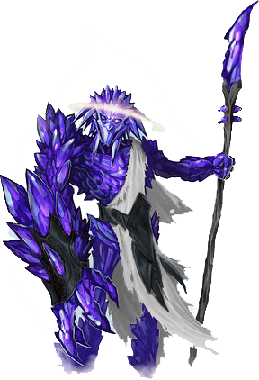

Deadly, aggressive, and sharp in every meaning of the word, this reflective entity cuts through its enemies with a precision that knows no equal.
The Euhedral is one of the many entities in its class that is capable of unleashing the true might of the X’Tal Collective. Forged from a high number of particular gene-seeds absorbed via hot environments in which glass is found to be naturally formed, this entity prides itself in a sleek and sharp-edged design that allows for unnatural speed and maneuverability when it comes to combat. Its higher intelligence allows it to execute tactical strategies unbefitting of what many would call a “glorified rock”.
